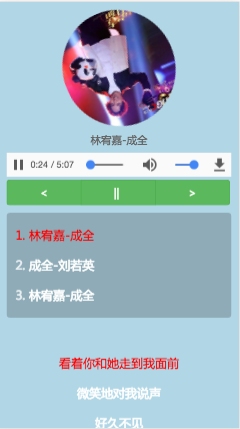

-
- Basic info. 基本信息
- 个人信息: 董硕 / 女 / 22岁
- 学历: 本科
- 工作经验: 3年
-
- Experience. 项目与工作经验
上海沃慧多媒体科技有限公司 （2016.4 - 2017.9）
个人项目
-
手机端音乐播放器
HTML5 音乐播放器

-
- Skill. 技能清单
html5前端
-
HTML5 / CSS3
能够编写语义化的 HTML，模块化的 CSS，完成较复杂的布局
熟练使用less，及响应式web设计-媒体查询
-
JavaScript
熟悉原生Javascript，能脱离jQuery等类库编码
熟练掌握jquery框架
-
前端框架
熟悉bootstrap,uikit等前端框架
-
其他
了解PS，Sketch等设计工具
熟练使用各浏览器调试工具
后端
-
语言
了解 ASP.Net 一年的.net编程经验，了解sql server 数据库,精通VS2015工具等
了解 php
其他
-
掌握 Git 等开发工具的使用